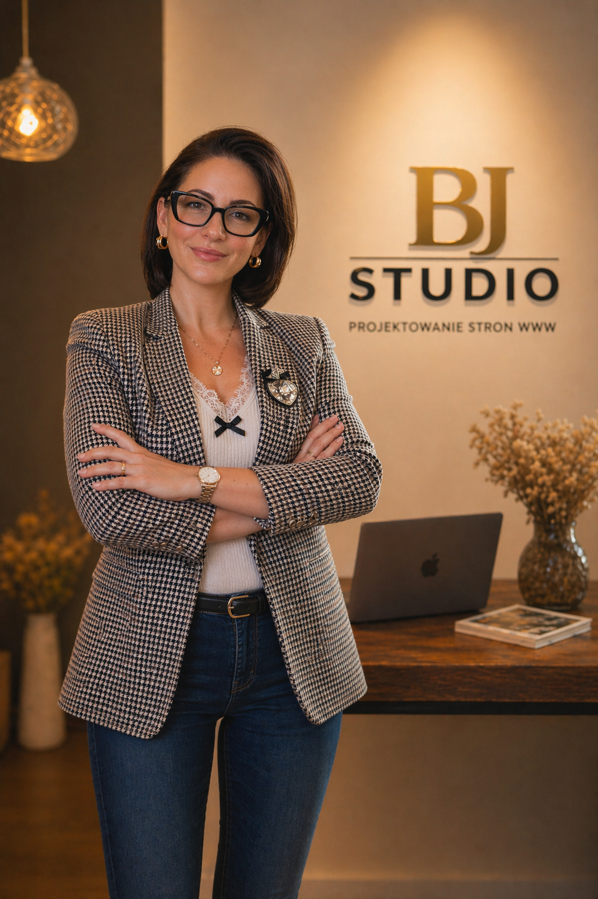

Przejrzysta struktura
Układ strony planuję tak, aby użytkownik szybko rozumiał, kim jesteś, co oferujesz i jak się z Tobą skontaktować.
O mnie
Tworzę nowoczesne strony internetowe dla małych firm, freelancerów i marek osobistych, które chcą wyglądać profesjonalnie, budować zaufanie i zdobywać więcej zapytań online.
Pomagam małym firmom i osobom prowadzącym własną markę stworzyć stronę, która wygląda profesjonalnie od pierwszego wejścia i jasno pokazuje wartość ich usług.
W mojej pracy łączę estetykę, przejrzystą strukturę, responsywny design i praktyczne podejście do biznesu. Zależy mi na tym, aby strona nie była tylko „ładna”, ale wspierała zaufanie, widoczność i kontakt z klientami.
Projektuję z dbałością o detale — od typografii i odstępów, po układ sekcji, przyciski, wersję mobilną i pierwsze wrażenie. Dzięki temu Twoja marka może wyglądać bardziej premium, spójnie i wiarygodnie online.

Moje podejście
Każdy projekt zaczynam od zrozumienia Twojej marki, odbiorców i celu strony.
Układ strony planuję tak, aby użytkownik szybko rozumiał, kim jesteś, co oferujesz i jak się z Tobą skontaktować.
Dbam o spójne kolory, typografię, odstępy i detale, które wpływają na profesjonalny odbiór marki.
Strona musi wyglądać świetnie na telefonie, tablecie i komputerze — bez utraty jakości i czytelności.
Projektuję z myślą o zaufaniu, czytelnej ofercie i zapytaniach, a nie tylko o samym wyglądzie strony.
Firmy, które mi zaufały
Opinie klientów
Realne opinie klientów, dla których przygotowałam strony wspierające markę, prezentację i zapytania.
★★★★★
Barbara stworzyła nowoczesną, profesjonalną stronę dla mojego biznesu. Wygląda świetnie i już w pierwszych tygodniach przyniosła więcej zapytań.
★★★★★
Strona wygląda elegancko i profesjonalnie, a oferta jest teraz dużo bardziej czytelna. To naprawdę podniosło poziom naszej marki.

★★★★★
Dokładnie to, czego potrzebowałam jako fotograf — elegancka, minimalistyczna strona, skupiona na moich zdjęciach.
Współpraca
Opisz krótko swój projekt, a ja pomogę Ci określić najlepszy kierunek strony, zakres i kolejne kroki.